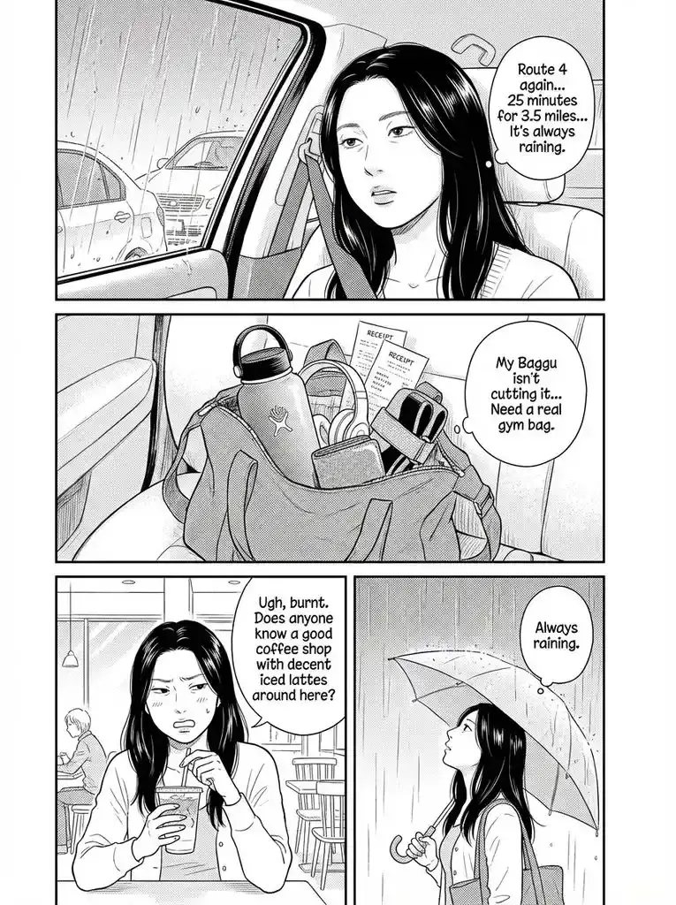

Late Night • 2h ago

Felix
🎩
🥶
x4
✨ High resonance detected nearby...
Find Next Signal
SAN FRANCISCO
MISSION DISTRICT
30,621 Memories
from 421 people
☰ Pages
Main (Gentle Drift)
Main (Time Variant)
Map View (Clean)